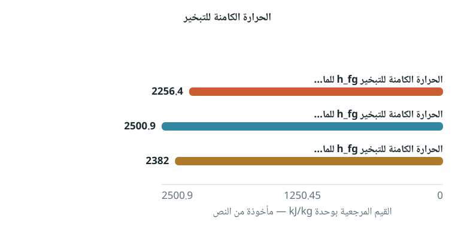

الحرارة الكامنة للتبخير
Latent Heat of Vaporization
الطاقة اللازمة لتبخير كيلوغرام من سائل مشبع عند درجة معلومة. تساوي 2256.4 kJ/kg للماء عند 100 °م و0.10142 MPa.
الحرارة الكامنة للتبخير، وتسمى أيضاً إنثالبي التبخير، هي الطاقة اللازمة لتبخير وحدة كتلة من سائل مشبع عند درجة حرارة أو ضغط معلوم. يعرّفها Çengel بالعلاقة h_fg = h_g − h_f، وينص أنها تتناقص بارتفاع درجة الحرارة أو الضغط وتصير صفراً عند النقطة الحرجة. القيمة المرجعية للماء 2256.4 kJ/kg عند 100 °م وضغط تشبع 0.10142 MPa، من جدول IAPWS-95 في تقرير NISTIR 5078. والقيمة تتغير كثيراً مع الحرارة: 2500.9 kJ/kg عند 0.01 °م و2382.0 عند 50 °م. ولهذا لا تُستخدم قيمة 100 °م عند درجات تشغيل أخرى بلا تصحيح.
كيف تعمل الظاهرة؟
الحرارة الكامنة للتبخير، وتسمى أيضاً إنثالبي التبخير، هي الطاقة اللازمة لتبخير وحدة كتلة من سائل مشبع عند درجة حرارة أو ضغط معلوم. تُستهلك في التغلب على قوى التجاذب بين الجزيئات لفصلها من الطور السائل إلى البخار، وفي شغل التمدد ضد الضغط المحيط. ويعرّفها Çengel بالعلاقة h_fg = h_g − h_f، وتتناقص بارتفاع درجة الحرارة أو الضغط وتصير صفراً عند النقطة الحرجة.
العلاقة بالأرقام
القيمة المرجعية للماء 2256.4 kJ/kg عند 100 °م وضغط تشبع 0.10142 MPa، من جدول IAPWS-95 في تقرير NISTIR 5078. والقيمة تتغير كثيراً مع الحرارة: 2500.9 kJ/kg عند 0.01 °م و2382.0 عند 50 °م. والفرق بين h_fg وu_fg عند 50 °م نحو 148.5 kJ/kg، فاستخدام u_fg مكان h_fg يضخّم القيمة 2.55%. وتبخير 1 kg ماء عند 100 °م يحتاج نحو 2256 kJ.
مفاهيم متقاربة
الحرارة الكامنة للتبخير تختلف عن الحرارة الكامنة للانصهار: الأولى تفصل السائل عن البخار وقيمتها أكبر بكثير، والثانية تفصل الصلب عن السائل. وتختلف عن الطاقة الداخلية للتبخير u_fg: العلاقة h_fg = u_fg + P·Δv، والفرق بينهما عند 50 °م نحو 148.5 kJ/kg. ولا تُخلط بالحرارة المحسوسة التي ترفع الحرارة داخل الطور.
حدود التطبيق
القيمة تتناقص بارتفاع الحرارة وتنعدم عند النقطة الحرجة، فلا تُستخدم قيمة 100 °م عند درجات تشغيل أخرى بلا تصحيح. والقيمة خاصة بالسائل المشبع، ولا تصلح لسائل مضغوط أو فوق حرج. ولا تُستخدم u_fg بدل h_fg في حسابات التبخير عند ضغط ثابت، فالفرق 2.55% عند 50 °م ليس مهملاً.

| الكمية | القيمة | المصدر |
|---|---|---|
| الحرارة الكامنة للتبخير h_fg للماء عند 100 °م وضغط تشبع 0.10142 MPa | 2256.4 kJ/kg | [1] |
| الحرارة الكامنة للتبخير h_fg للماء عند النقطة الثلاثية 0.01 °م و0.6117 kPa | 2500.9 kJ/kg | [2] |
| الحرارة الكامنة للتبخير h_fg للماء عند 50 °م و12.352 kPa | 2382.0 kJ/kg | [2] |
| درجة حرارة النقطة الثلاثية للماء التي قُيست عندها h_fg = 2500.9 kJ/kg | 0.01 °م | [2] |
| درجة الحرارة التي قُيست عندها h_fg = 2382.0 kJ/kg | 50 °م | [2] |
| نسبة الخطأ النسبي عند استخدام u_g = 2442.7 kJ/kg مكان h_fg = 2382.0 kJ/kg عند 50 °م: (2442.7 − 2382.0)/2382.0 = 2.55% — الأساس h_fg عند 50 °م | 2.55 % | [2] |
المصادر
- 1 Thermodynamic Properties of Water for Temperatures from 0 to 1000 C and Pressures to 1000 MPa — NIST (NISTIR 5078) (1998). nvlpubs.nist.gov/nistpubs/Legacy/IR/nistir5078.pdf · اطُّلع عليه 2026-11-21
- 2 Thermodynamics: An Engineering Approach, 8th ed. — McGraw-Hill (2015). openlibrary.org/api/books?bibkeys=ISBN:9780073398174&format=json&jscmd=data · اطُّلع عليه 2026-11-21
استشهد بهذا المصطلح
الصيغتان مبنيتان من بيانات الصفحة نفسها: العنوان والتاريخ ورابط النسخة المنشورة.
الحرارة الكامنة للتبخير — Latent Heat of Vaporization. (2026). ديوان المعرفة — انفراد. https://infiradev.com/diwan/terms/term-latent-heat-vaporization.html
@misc{term-latent-heat-vaporization2026,
title = {الحرارة الكامنة للتبخير},
titleaddon = {Latent Heat of Vaporization},
howpublished = {{ديوان المعرفة — انفراد} — مرجع علمي عربي},
year = {2026},
url = {https://infiradev.com/diwan/terms/term-latent-heat-vaporization.html},
urldate = {2026-11-26},
note = {مراجعة علمية: hermes (مراجعة معتمدة 2026-11-26)}
}
راجعه: hermes (مراجعة معتمدة 2026-11-26) · 2026-11-26 · آخر تحديث 2026-11-21